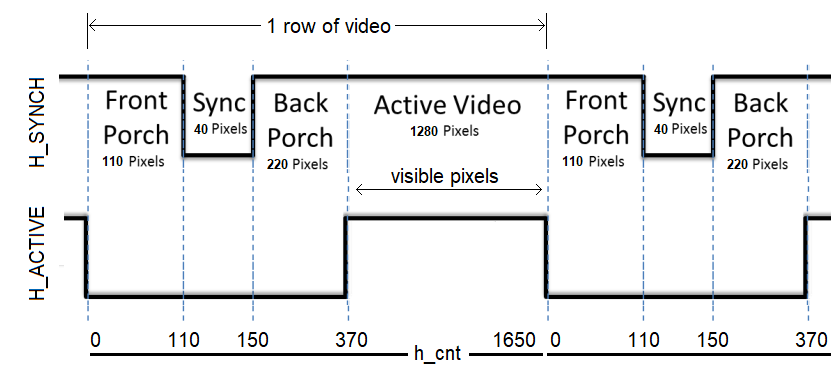
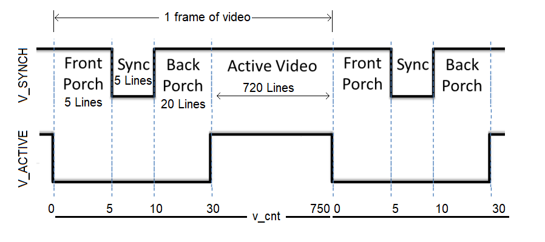
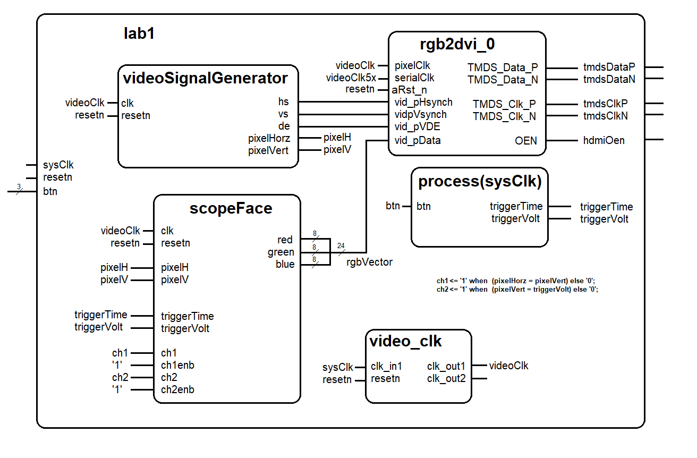
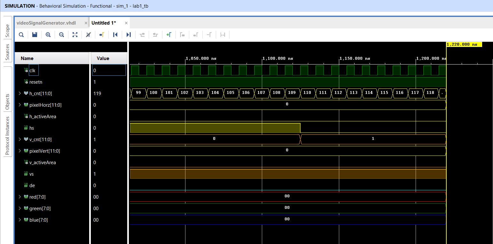
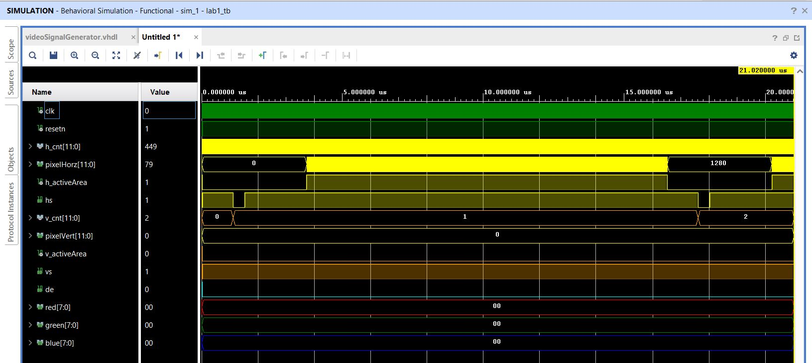
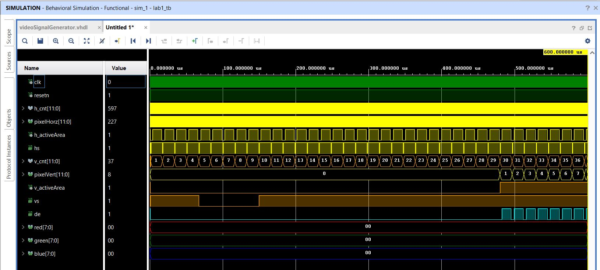
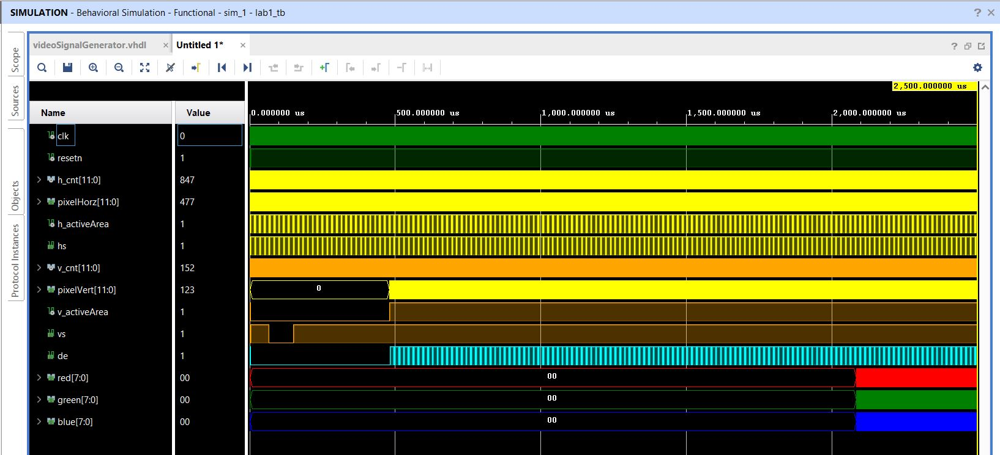
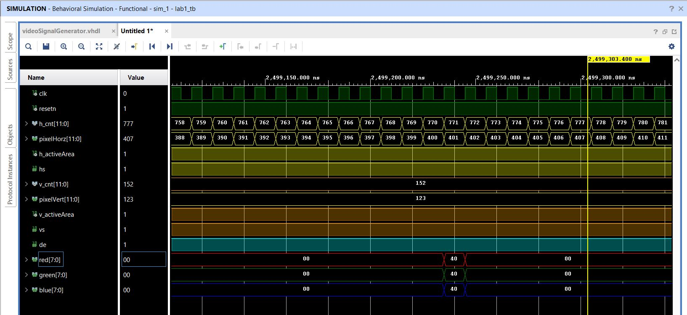

| Lab: | 1 |
| Status | In Progress |
Lab 1 - Video Synchronization
In this lab, you will write a HD Video controller in VHDL and implement it on your FPGA development board. You will be provided a RGB-to-HDMI module that will automatically format your output for the HDMI output port on your development board. This HD video controller will be tasked to generate the display portion of an oscilloscope as shown in the figure below. The scope face consists of a white grid, used to measure the signals, two trigger markers, and the waveforms. In this lab the waveforms will be artificially generated by your code, but in later labs, the waveforms will be generated by incoming audio waveforms.
HD Video Overview
The HD Video standard is an interface protocol used to transmit video data to a screen. The HD Video protocol uses a scanning method to project an image on the screen. Starting in the top-left of the screen, the monitor will progressively move from left to right, top to bottom to display each pixel. The following signals must be sent to a HDMI equiped monitor in order to display an image.red,green,blue- three separate 8-bit signals indicating the amount of each color to display in the current pixel. These signals are sometimes abbreviated as RGB.h_sync- Horizontal synchronization signal that tells the screen to start writing pixels to the next linev_sync- Vertical synchronization signal that tells the screen that the current video frame is completed. After receiving a vertical synch signal, the screen then starts writing pixels to the top-left of the screen.
front_porch, sync_pulse,
back_porch, and active_video. Incoming pixel
data (through the RGB channels) is only displayed during the active_video
state of the synchronization signals.The h_cnt value will count up from 0 to 1650 at 74.25MHz. The
pixel_clk
carries this clock signal and is generated using the video_clk module. You should
use the h_cnt counter's value to generate the h_synch and h_active signals using
simple range comparisions. You can generate the pixelHorz value as h_cnt minus
the width of the front_porch + synch + back_porch in the active video area.

Figure 1: The
h_sync signal contains four
states. Pixel data is only displayed on the monitor during the
active_video state. During all other state, the RGB values must be
"0".The v_cnt value will count up from 0 to 750. The v_cnt value is incremented every time a row of video is drawn. So v_cnt counts up much more slowly than h_cnt. You should use the v_cnt counter's value to generate the v_synch and v_active signals using simple range comparisions. You can generate the pixelVert value as v_cnt minus the width of the front_porch + synch + back_porch in the active video area.

Figure 2: The
v_sync signal is similar
to h_sync, but instead of counting based on
pixel_clk, the states are based on the number of iterations
of the h_sync signal. Pixel data is only displayed on the
monitor during the active_video state. During all other state, the RGB
values must be "0".Architecture
The design of Lab 1 is broken down into separate modules, some of which are provided for you and some which you will need to create. The interconnection of the modules is illustrated in the following schematic. When a signal name appears just inside a box, that should should correspond to the name of that signal in the entity description. Please note there are a few omissions in the diagram that you should correct as part of your documentation (see Turn-In section).
VHDL Code
In order to get you going in this lab, some of the VHDL code has been provided for you. In most cases, you should refrain from changing the modules given. In order to get a better understanding how these modules interact with one another, the following section provides a schematic and the input, output and behavior of some of the modules.- lab1.vhdl
- lab1_tb.vhdl
- rgb2dvi_v1_3.zip
- scopeFace.vhd
- videoSignalGenerator.vhdl
- lab1_tbWaveSetup.tcl
- lab01HDMI.xdc
The videoSignalGenerator module
The videoSignalGenerator component generates the signals to sweep the display beam across the display from left to right, and from top to bottom. The scopeFace component will take the pixelHorz and pixelVert values and determine what color pixel to place at that location.
entity videoSignalGenerator is
PORT(
clk: in STD_LOGIC;
resetn : in STD_LOGIC;
hs: out STD_LOGIC;
vs: out STD_LOGIC;
de: out STD_LOGIC;
pixelHorz: out STD_LOGIC_VECTOR(11 downto 0);
pixelVert: out STD_LOGIC_VECTOR(11 downto 0));
end videoSignalGenerator;
| clk | This is the 74.25Mhz videoClk generated by the video_clk component. |
| resetn | This is the same active low reset signal passed into the top level Lab1 module. |
| hs | The h_synch signal for the current row,column position. |
| vs | The v_synch signal for the current row,column position. |
| de | The blank signal for the current row,column position. Its the logical and of the h_blank and v_blank signals. |
| pixelHorz | The current row on the display that needs a RGB value from this component. |
| pixelVert | The current column on the display that needs a RGB value from this component. |
- h_cnt and v_cnt
- hs and vs
- pixelHorz and pixelVert
- h_activeArea and v_activeArea
The scopeFace module
This component takes in the horziontal and vertical pixel location from the videoSignalGenerator component and determines the R,G,B value of the pixel that should be drawn at that location.
entity scopeFace is
PORT (
clk: in STD_LOGIC;
resetn : in STD_LOGIC;
pixelHorz : in STD_LOGIC_VECTOR(11 downto 0);
pixelVert : in STD_LOGIC_VECTOR(11 downto 0);
triggerVolt: in STD_LOGIC_VECTOR (11 downto 0);
triggerTime: in STD_LOGIC_VECTOR (11 downto 0);
red : out STD_LOGIC_VECTOR(7 downto 0);
green : out STD_LOGIC_VECTOR(7 downto 0);
blue : out STD_LOGIC_VECTOR(7 downto 0);
ch1: in STD_LOGIC;
ch1Enb: in STD_LOGIC;
ch2: in STD_LOGIC;
ch2Enb: in STD_LOGIC);
end scopeFace;
| clk | This is the 25Mhz pixel clock generated by the DCM in the video module. |
| resetn | This is the same active low reset signal passed into the top level component. |
| pixelVert | The current row on the display that needs a RGB value from this component. |
| pixelHorz | The current column on the display that needs a RGB value from this component. |
| triggerVolt | This is a 12-bit value representing the trigger voltage. This value is passed to the scopeFace module so that a yellow arrow (see Trigger Level Marker in the screen show) on the vertical axis. |
| triggerTime | This is a 12-bit value representing the trigger time. This value is passed to the scopeFace module so that a yellow arrow (see Trigger Time Marker in the screen show) on the horizontal axis. |
| red | The 8-bit red intensity for this row,column pixel on the screen. |
| green | The 8-bit green intensity for this row,column pixel on the screen. |
| blue | The 8-bit blue intensity for this row,column pixel on the screen. |
| ch1 | This 1-bit signal causes a yellow channel 1 trace to be drawn on the display at the current pixel location. When this signal is 0, no channel 1 pixel is drawn. |
| ch1enb | This 1-bit signal enable the ch1 signal to be drawn. |
| ch2 | This 1-bit signal causes a green channel 2 trace to be drawn on the display at the current pixel location. When this signal is 0, no channel 2 pixel is drawn. |
| ch2enb | This 1-bit signal enable the ch2 signal to be drawn. |
The video_clk module
You will need to generate an IP core for this module. Use the HowTo use Incorperating IP.The rgb2dvi_0 module
You will need to generate an IP core for this module. Use the HowTo use Incorperating IP.Required Functionality
- You will be asked to show the following simulation results,
- Show a image of your simulation from 0 to 1.2us. This should show the first line of video with proper hs, h_activeArea, h_cnt and pixelHorz.
- Show a image of your simulation from 0 to 550us. This should show the first 34 line of video with proper vs, v_activeArea, v_cnt and pixelVert.
- Show a image of your simulation from 0 to 2ms. This should show the first non-zero RGB values being sent to the display.
- Your code must generate the thick white outline that defines the border of the oscilloscope. Draw grid in grey (R,G,B) = (0x40, 0x40, 0x40) so that you have 10 horziontal and 10 vertical divisions. Draw 4 hatch marks in grey so they evenly split each vertical and horziontal division. Draw the markers as triangles in cyan (R,G,B) = (0x00, 0xFF, 0xFF).
- The ALINX board has four buttons that you are able to associate with
your design. One of these buttons (PL Key 1) is dedicated to the resetn
function. Use the remaining three keys to manipuate the Trigger Volt Mark
and the Trigger Time Mark as follows:
- Pressing PL_KEY3 decreases the Trigger Volt Mark
- Pressing PL_KEY3 while holding PL_KEY2 increases the Trigger Volt Mark
- Pressing PL_KEY4 increases the Trigger Time Mark
- Pressing PL_KEY4 while holding PL_KEY2 decreases the Trigger Time Mark
- Test the channel functions by:
- Drawing the channel 1 trace (yellow) along a diagonal where (row = column).
- Drawing the channel 2 trace (green) along a horziontal at the same level as the voltage trigger.
Simulation
You will need to run simulations to make sure that all your videoSignalGenerator is producing the correct waveforms. I've included a testbench file and TCL setup script to help you setup the testbench. The images below are from my simulation output. You signals may differ slightly in their timing and your videoSignalGenerator will function just fine. The RGB signal output really depends on your scopeFace and may differ quite a bit from what my setup generated.| Signal | Color | Radix |
| clk | Green | binary |
| resetn | Green | binary |
| h_cnt | Yellow | unsigned |
| pixelHorz | Yellow | unsigned |
| h_activeArea | Yellow | binary |
| hs | Yellow | binary |
| v_cnt | Yellow | unsigned |
| pixelVert | Yellow | unsigned |
| v_activeArea | Yellow | binary |
| vs | Yellow | binary |
| de | Green | binary |
| red | Red | Hexadecimal |
| green | Green | Hexadecimal |
| blue | Blue | Hexadecimal |
| At 1.22us |  |
| Up to 21us |  |
| Up to 600us |  |
| Up to 2500us |  |
| At 2500us |  |
Connecting
Your ALINX board will need to connect to the HDMI port, the JTAG progrmming port and the power supply. The image below shows how I made these connections. The reset and trigger control buttons assigned in the XDC file are also shown.